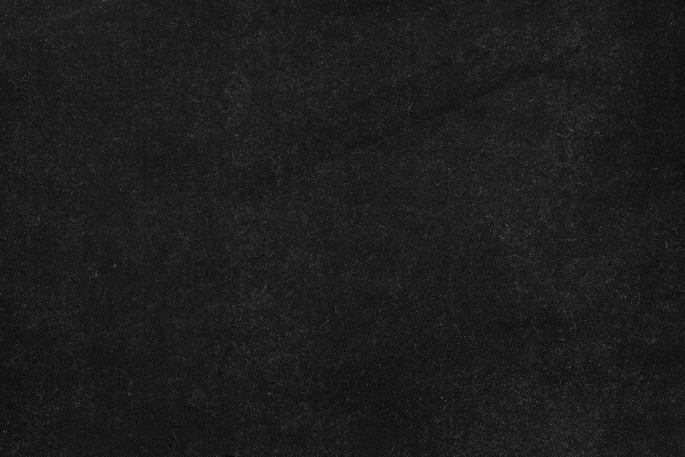

StoryForge
Estúdio LPZ

FEED
CHAPEU
AMOSTRA DE TEXTO SECUNDARIO
TÍTULO DO POST AQUI
Cada detalhe faz a diferença quando o objetivo é criar algo verdadeiramente especial, capaz de transmitir personalidade e identidade. Unimos criatividade, inovação e dedicação para desenvolver projetos que valorizam cada ideia e transformam conceitos em experiências visuais.
MP4
Sem arquivo
Aguardando MP4